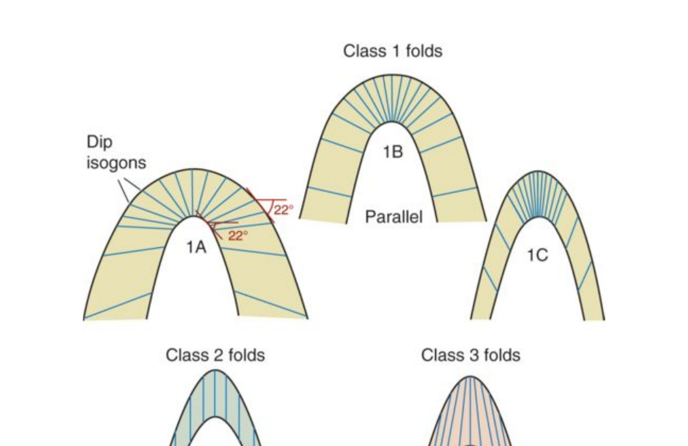
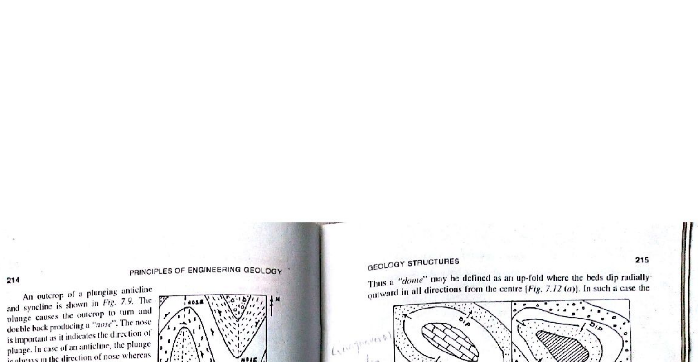

In 1967, John G. Ramsay revolutionized structural geology by establishing a rigorous mathematical classification of folds based on dip isogons (lines connecting points of equal dip on adjacent surfaces of a folded layer) and the variation of orthogonal layer thickness ($t_\alpha$) relative to limb dip ($\alpha$):

Because concentric folded beds maintain constant orthogonal thickness ($t_0$) like layers of cardboard or thick plywood bent together, circular arc geometry imposes a severe geometric constraint with depth:

Candidates must clearly discriminate alternative fold morphologies:
| Fold Class (Ramsay, 1967) | Common Name | Orthogonal Thickness ($t_\alpha$) | Dip Isogons Pattern | Curvature Variation with Depth |
|---|---|---|---|---|
| Class 1A | Thick-Limbed Fold | $t_\alpha > t_0$ (thicker on limbs) | Strongly Convergent | Anticlines broaden downward |
| Class 1B | Parallel / Concentric Fold | $t_\alpha = t_0 = \text{constant}$ | Moderately Convergent (perpendicular to bedding) | Anticlines sharpen downward; Synclines broaden downward |
| Class 1C | Modified Concentric Fold | $t_0 \cos\alpha < t_\alpha < t_0$ | Weakly Convergent | Weak sharpening downward; common buckling mode |
| Class 2 | Similar Fold | $t_\alpha = t_0 \cos\alpha$ (thick hinge, thin limbs) | Strictly Parallel | Invariant with depth (identical profile on all layers) |
| Class 3 | Thinned-Limb Fold | $t_\alpha < t_0 \cos\alpha$ (extreme limb thinning) | Divergent toward core | Synclines sharpen downward; Anticlines broaden downward |